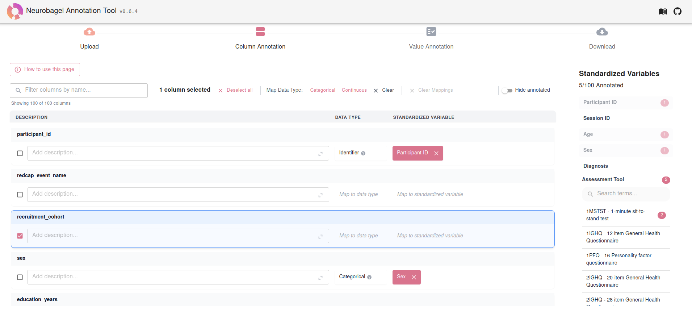

Neurobagel
An open ecosystem for decentralized collaboration with local data governance.
Intuitive tools and extensible schemas to harmonize, connect, and query clinical and neuroimaging data across sites, all while keeping data local.
An open ecosystem for decentralized collaboration with local data governance.
Intuitive tools and extensible schemas to harmonize, connect, and query clinical and neuroimaging data across sites, all while keeping data local.
Share your datasets without uploading them to a central location. Your raw data stays local and secure, and you control exactly what information researchers can see about your data.

Make your data ready for sharing by standardizing metadata and variable names using curated vocabularies and community standards, without technical expertise.

Join a worldwide network of researchers to query subject-level metadata without moving sensitive files. Foster large-scale, multi-site studies while strictly adhering to your local privacy policies.

Aggregate metadata from distributed locations into a unified, searchable index. Empower your consortium to seamlessly discover available datasets while maintaining independent local data governance.

Describe phenotypic data using a harmonized data model completely in the browser.


Run a federated query to create your own cross-dataset subject cohort based on clinical-demographic and imaging parameters.
Want to host a local knowledge graph store at your institute? docker compose up, and you're in business.


Neurobagel is a collaborative effort based in the ORIGAMI Lab.
Learn more about our core team here.